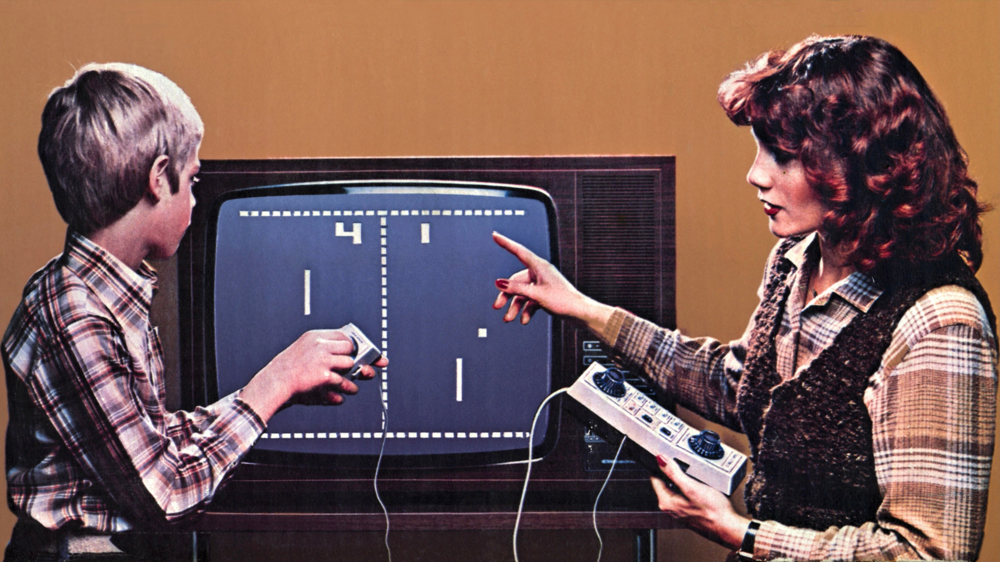

Démonstration d'un jeu réalisé sur Godot
Synopsis
Dans un monde où chacun a le droit d'être bizarre, Filboy est… très bizarre. Il sent mauvais, il ne se coiffe jamais, mais ce qu'il aime par-dessus tout, c'est les formules mathématiques. Pas les comprendre, non. Juste… les aimer. Passionnément. Comme on tombe sous le charme d'un inconnu mystérieux.
Il leur écrit des lettres. Il leur déclame des poèmes. Il collectionne les équations dans un petit carnet qu'il garde contre son cœur (et qui sent légèrement la chaussette sale). Selon lui, une belle formule, c'est comme un baiser : mystérieuse, excitante, et parfois impossible à résoudre.
Un jour, Filboy vit tranquillement dans son village poussiéreux quand une terrible nouvelle tombe : les Lavobots, des robots obsédés par la propreté, veulent nettoyer le monde pour en faire un endroit parfait, ordonné… et surtout sans informaticiens puants ni matheux rêveurs.
Ils ont construit leur repaire dans un château géant en forme de douche flottant dans les nuages, d'où ils lancent des vagues de bulles nettoyantes capables de rendre propre même un chat sauvage ou un professeur de philosophie. C'est donc décidé : Filboy doit partir à leur rescousse. Accompagné de son fidèle compagnon ailé, Daveoiseau, un oiseau malin, rapide et pas du tout sentimental, qui sert souvent de voix de la raison, il entame une aventure périlleuse vers le Château-Sec.
Présentation des personnages
.png)
Filboy
Brillant informaticien de jour, justicier en soubrette la nuit, sous sa jupe à volants et son tablier immaculé, Filboy cache un génie du code et un cœur vaillant. D'une loyauté sans faille envers les données propres et les systèmes bien rangés, il n'hésite pas à plonger dans les serveurs corrompus pour restaurer l'ordre. Mais attention : une simple éclaboussure d'eau suffit à le paralyser dû à sa faiblesse et phobie des douches.
.png)
Lavobot
Programmé pour nettoyer, perfectionné pour attaquer, Lavobot est un robot de maintenance devenu menace. Son arme principale ? Un flexible de douche à haute pression. Il traque Filboy avec un seul objectif : le tremper. Froid, méthodique et toujours propre.
.png)
Daveoiseau
Toujours perché sur une étagère ou planant dans les airs, Daveoiseau est le fidèle compagnon de Filboy. Doté d'un flair infaillible pour repérer les pièges et les raccourcis, il aide le héros en sifflant des indices.
Démo
Sortie reportée
Nous sommes au regret de vous annoncer que la sortie de notre jeu "Les Aventures de Filboy" a été temporairement reportée.
Suite à la disparition mystérieuse de notre designer artistique Kyell Cornu, l'équipe de développement a dû revoir ses priorités et réorganiser le processus de création.
Nous mettons tout en œuvre pour localiser notre collègue et, en attendant son retour, nous continuons le développement avec les ressources artistiques existantes.
Le jeu arrivera prochainement ! Nous vous tiendrons informés de l'évolution de la situation et de la nouvelle date de sortie dès que possible.